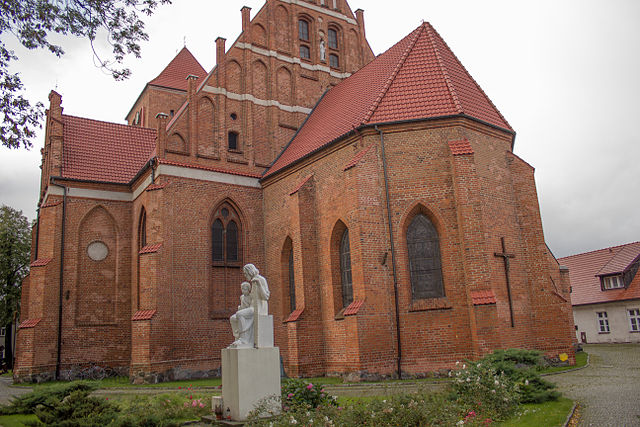
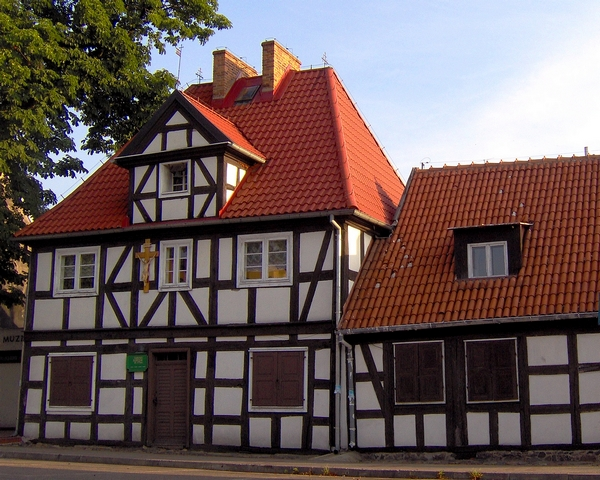
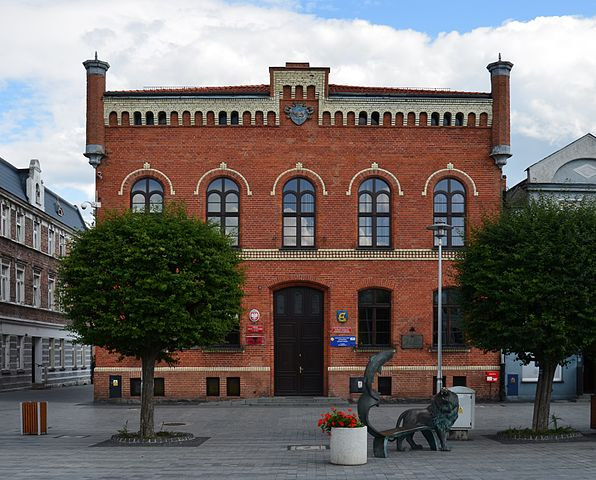
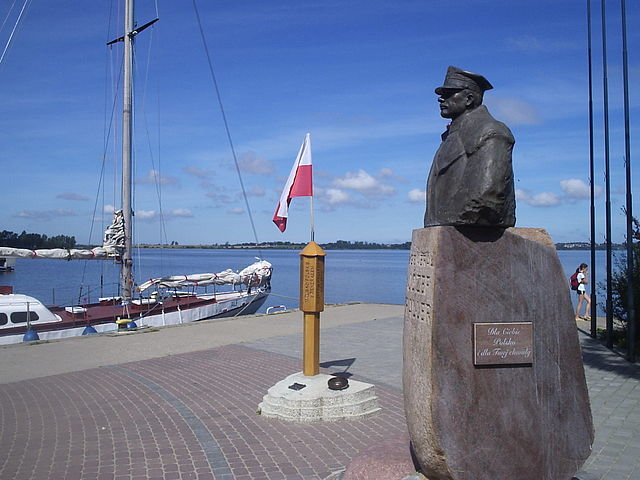
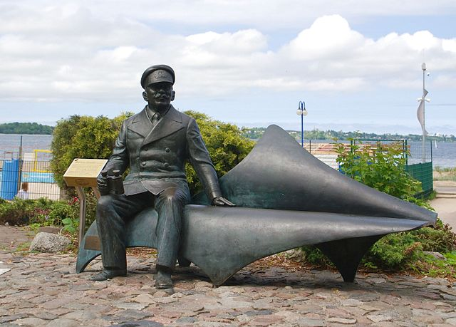
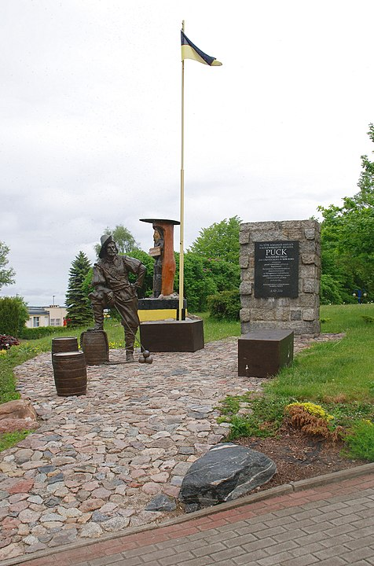
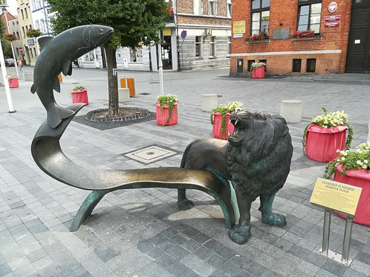

Gotycki Kościół farny par. pw. św. Apostołów Piotra i Pawła w Pucku

XVII-wieczny szpital-przytułek – dział etnograficzny Muzeum Ziemi Puckiej

Neogotycki ratusz z XIX wieku

Pomnik gen. Józefa Hallera i słupek zaślubinowy

Pomnik (ławeczka) Mariusza Zaruskiego

Ławeczka Puckiego Kapra

Pucka Ławeczka Herbowa
